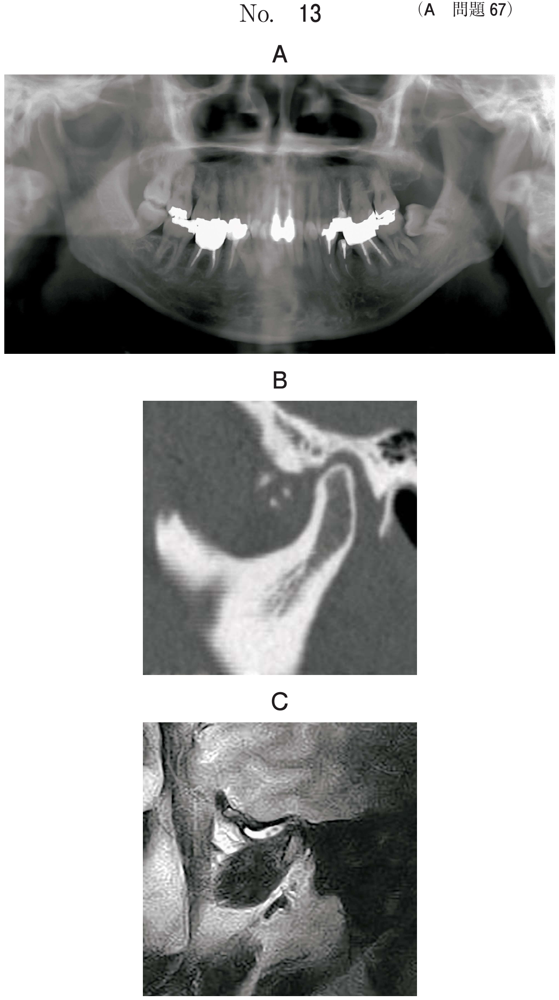
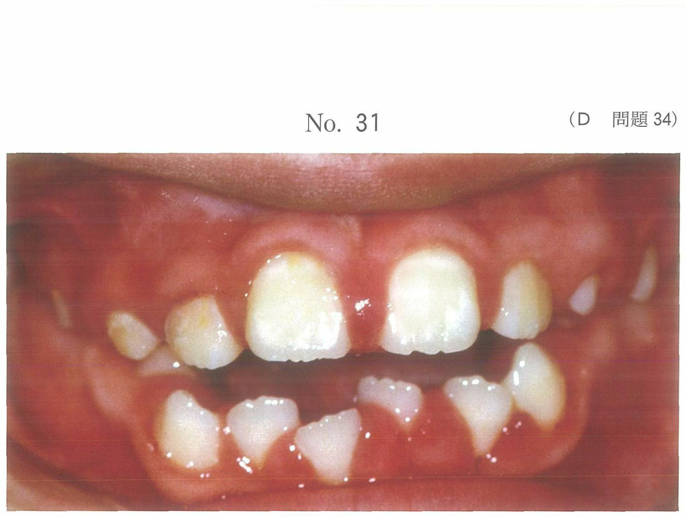
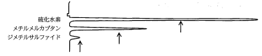
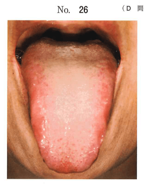
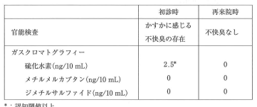

口臭の対応は診断に即した治療が基本。治療必要性（TN: Treatment Needs）に基づいて対応する。
| 分類 | 定義 | 治療方針 |
|---|---|---|
| I. 真性口臭症 | 官能検査スコア2以上 | 原因に応じた治療 |
| I-a. 生理的口臭 | 起床時、空腹時など | TN1：口腔清掃指導 |
| I-b-1. 口腔由来 | 歯周病、舌苔など | TN2：PTC・PMTC、疾患治療 |
| I-b-2. 全身由来 | 糖尿病、肝疾患など | TN3：医科への紹介 |
| II. 仮性口臭症 | 検査で口臭なし、本人は訴える | TN4：カウンセリング |
| III. 口臭恐怖症 | TN1〜4で改善しない | TN5：精神科・心療内科 |
最も頻出のパターン。舌苔の制御が中心となる。
| 成分 | 作用機序 |
|---|---|
| 塩化亜鉛 | ①蛋白分解酵素阻害 ②含硫アミノ酸と結合 ③VSCを非揮発化 |
| 銅クロロフィリンナトリウム | 消臭作用（葉緑素由来） |
※硝酸カリウム（知覚過敏）、乳酸アルミニウム（知覚過敏）、ピロリン酸ナトリウム（歯石沈着防止）は口臭減弱効果なし
※初診時は精神科紹介は不要（口臭恐怖症ではない）
舌苔に起因する生理的口臭と診断された患者への対応で適切なのはどれか。2つ選べ。
【解説】生理的口臭には定期的な口臭検査と口腔衛生管理の説明が適切。水による頻回の洗口は効果なし。心療内科は口臭恐怖症の場合。食品禁止は過剰な対応。
60歳の女性。家族に口臭を指摘されて来院した。本人は自覚していないという。官能検査の結果、中等度の口臭が認められ、ポータブルガスクロマトグラフィー検査で、VSCが高値を示した。プロービングデプスは全て3mm以下で、O'LearyのPCRは15%であった。初診時の口腔内写真（別冊No.21）を別に示す。
適切な対応はどれか。2つ選べ。

【解説】VSC高値で歯周病なし（PD≦3mm）→舌苔由来の口臭。舌ブラシと塩化亜鉛配合洗口剤が適切。抗菌薬は不要、フッ化物は齲蝕予防、チャーターズ法は歯周病用。
口臭の減弱効果を有するのはどれか。2つ選べ。
【解説】塩化亜鉛はVSCを非揮発化、銅クロロフィリンナトリウムは消臭作用。硝酸カリウム・乳酸アルミニウムは知覚過敏用、ピロリン酸ナトリウムは歯石沈着防止用。
32歳の男性。強い口臭を主訴として来院した。口臭は3年前から気になりだし、昼夜の区別なく感じているという。口臭検査では官能検査、機器測定値ともに検出閾値以下である。歯周検査の結果も異常はない。舌の写真（別冊No.43）を別に示す。
次に行うのはどれか。2つ選べ。

【解説】官能検査・機器測定とも閾値以下→仮性口臭症。まず検査結果の説明（カウンセリング）と別の日に再検査を行う。初診時に精神科紹介は時期尚早。舌苔も認めないため舌清掃は不要。
27歳の男性。口臭を主訴として来院した。官能検査で強い口臭を認めるが、齲蝕や歯周炎は認めない。初診時のガスクロマトグラフィー検査結果を図に示す。ただし矢印は各成分の嗅覚閾値を示す。
適切な対応はどれか。2つ選べ。

【解説】官能検査で口臭あり、齲蝕・歯周炎なし→舌苔由来の真性口臭症（生理的口臭）。口腔清掃指導と唾液分泌量の評価（口腔乾燥の確認）が適切。
39歳の女性。口臭を主訴として来院した。今朝起床時の飲食は緑茶のみであるという。プロービング深さは全歯3mm以下で、O'LearyのPCRは15%であった。口腔清掃指導を行ったところ、2週後の再来院時には口臭の訴えは認められなくなった。初診時の舌の写真（別冊No.26）と初診時と再来院時の口臭検査結果の一部を表に示す。
最も考えられるのはどれか。1つ選べ。


【解説】歯周病なし（PD≦3mm）、口腔清掃指導で改善→生理的口臭（舌苔由来）。仮性口臭症は検査で口臭が検出されない場合。飲食物由来は緑茶のみで該当しない。